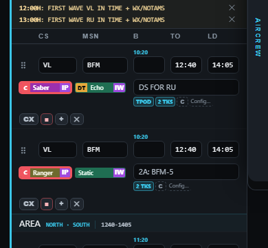
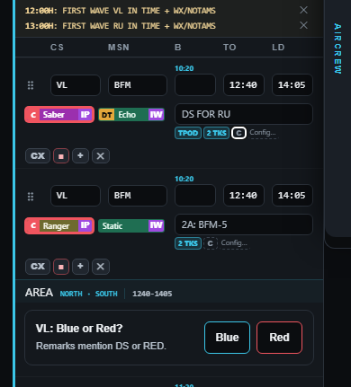
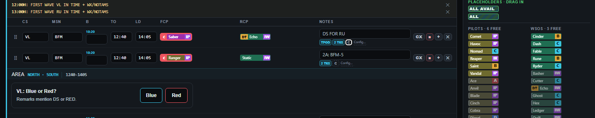

Insights — proposed changes
Design picture only. The blue/red splits below are examples; no saved missions have changed. DS, RED and RED AIR missions count red automatically. For other missions, DS/RED in Remarks asks the whole formation's Blue/Red role. No extra role label is added to schedule lines. The actual feature is not built yet.


Open Insights from the Scheduler Board
Desktop: beside the bell. Phone: inside the existing ⋯ menu, leaving its bar the same size.


Question after leaving Remarks — placement proposal
The first twelve plus Show all, whole-formation scope and no new line label are agreed. SC, AVALON and BB standby are excluded from flying load; SC main counts towards work hours.


The question sits below the formation's AREA strip. It uses temporary space and moves following content down; either answer removes it. It waits for the edit and tap or Tab transition to finish and does not take focus. Placement and lifecycle still await agreement.

Pictures are temporary design overlays. Saved-category, issuing, phone keyboard and complete editing behaviour are unbuilt. Earlier floating/permanent/edit-focus control pictures remain in the folder as earlier proposals.
Next: settle when the question repeats, closing it without answering and correcting an answer; then confirm the complete picture look. The firm plan is agreed here before a new chat builds it.